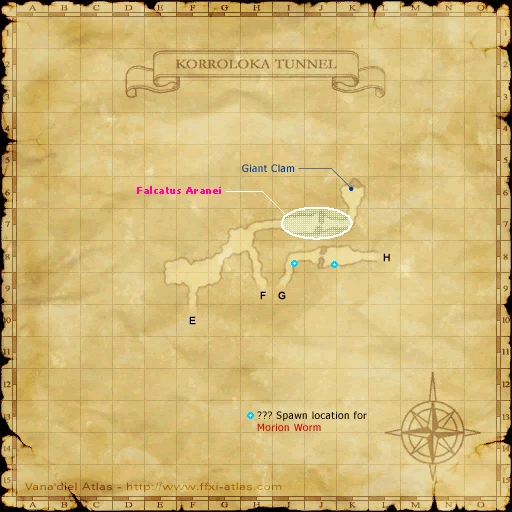

Level 75 reference · Zenith rules
|
Family: Spider Notorious Monster |
|
| Zone | Level | Drops | Steal | Spawns |
Notes |
|---|---|---|---|---|---|
|
1 |
L, H | |||
|
HP = Detects Low HP; M = Detects Magic; Sc = Follows by Scent; T(S) = True-sight; T(H) = True-hearing JA = Detects job abilities; WS = Detects weaponskills; Z(D) = Asleep in Daytime; Z(N) = Asleep at Nighttime | |||||



Image source
Notes
- Lottery Spawn from the Huge Spiders around (J-7) of the third map, approximately every 3 hours.
- Drops around 1,200 gil; Mug can be used for more.
- Has around 3,500 HP.
- Soloable by most jobs at level 50 and by Monk at level 43 (using Hundred Fists).

Adapted from Eden Wiki: Falcatus Aranei · Contributors and history · CC BY-SA 4.0. Revision 1987. Layout, links and optional background text adapted for Zenith.